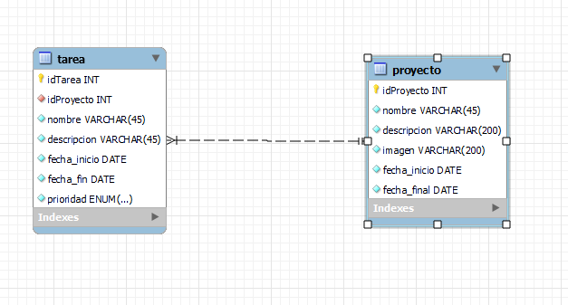

La base de datos esta creada en MySQL con dos tablas, que representan los proyectos y las tareas.
Estas tienen todos los datos que introducimos en la aplicacion sobre los mismos, y ademas el id, el cual se genera de forma automatica y el usuario no puede conocer, a no ser que genere un reporte.